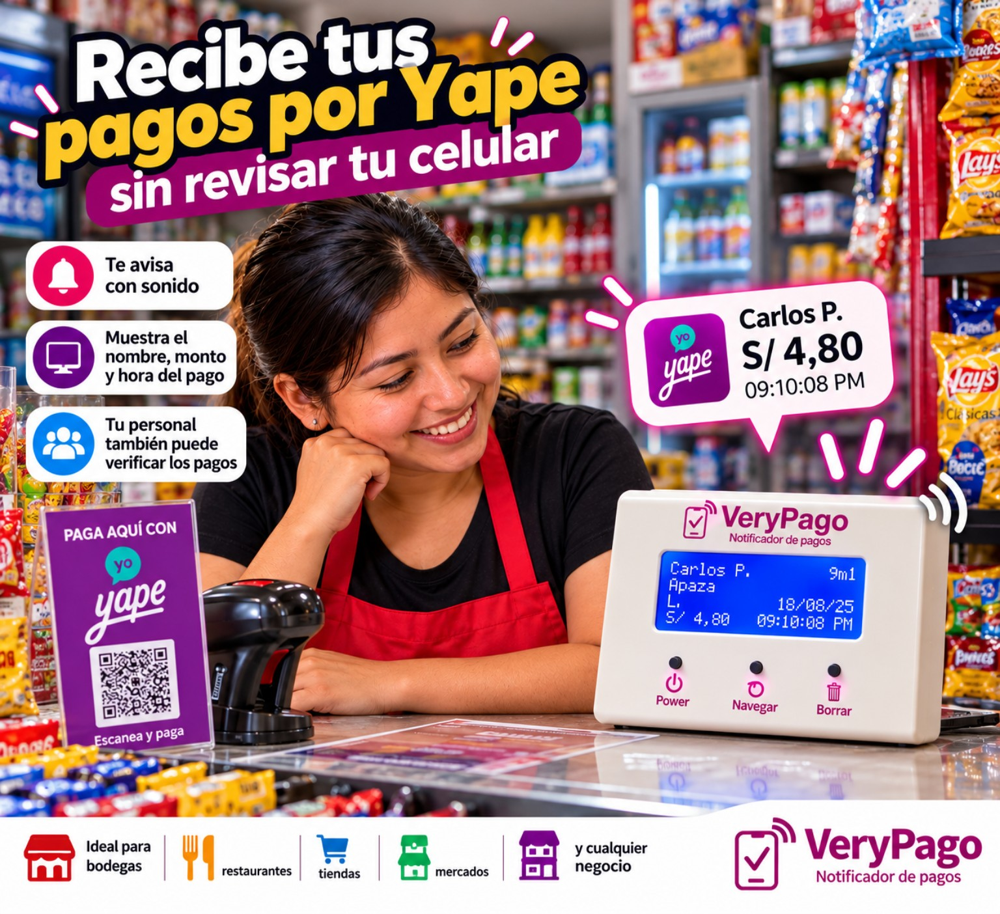
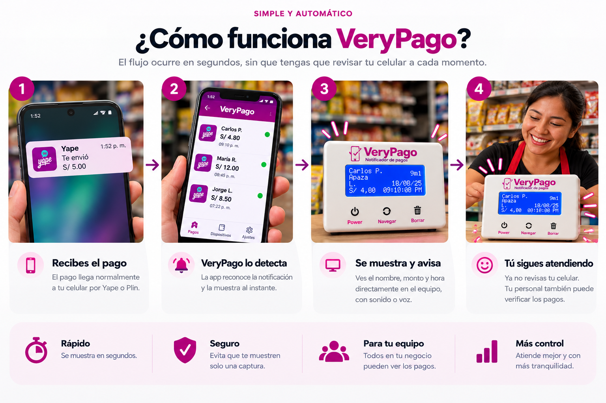
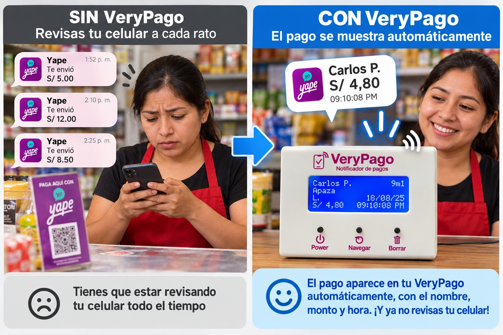
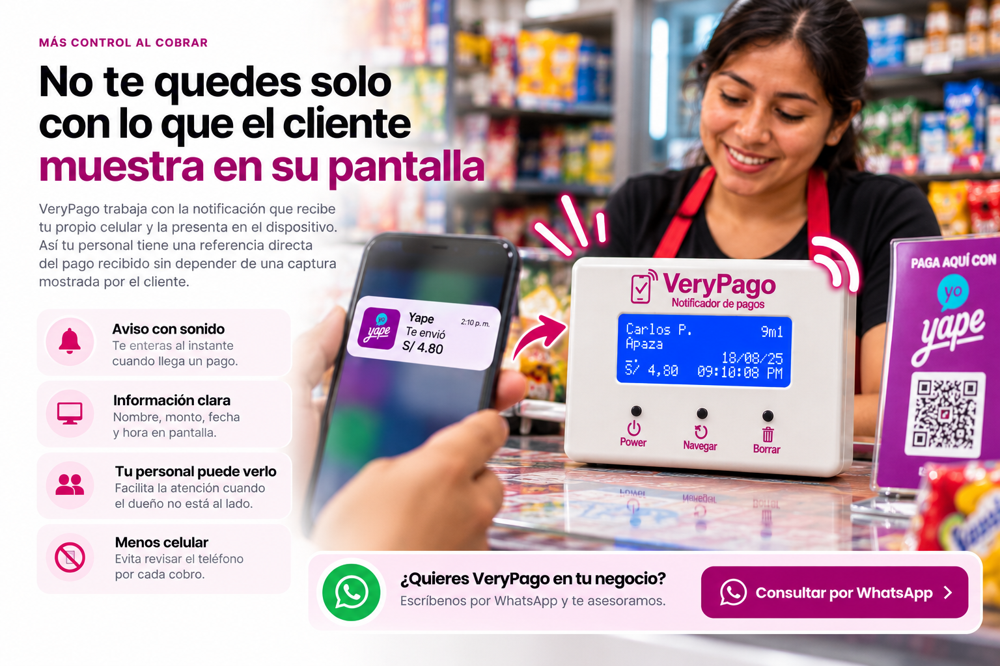
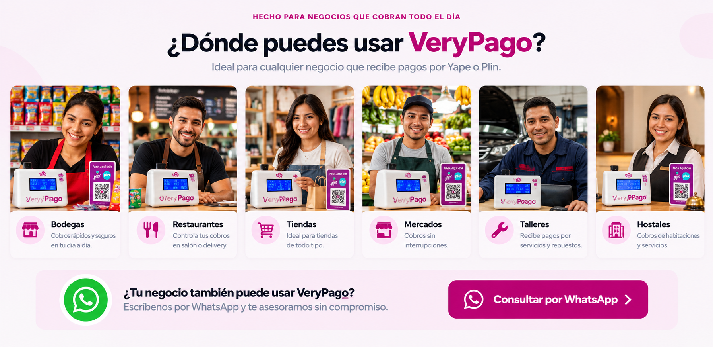
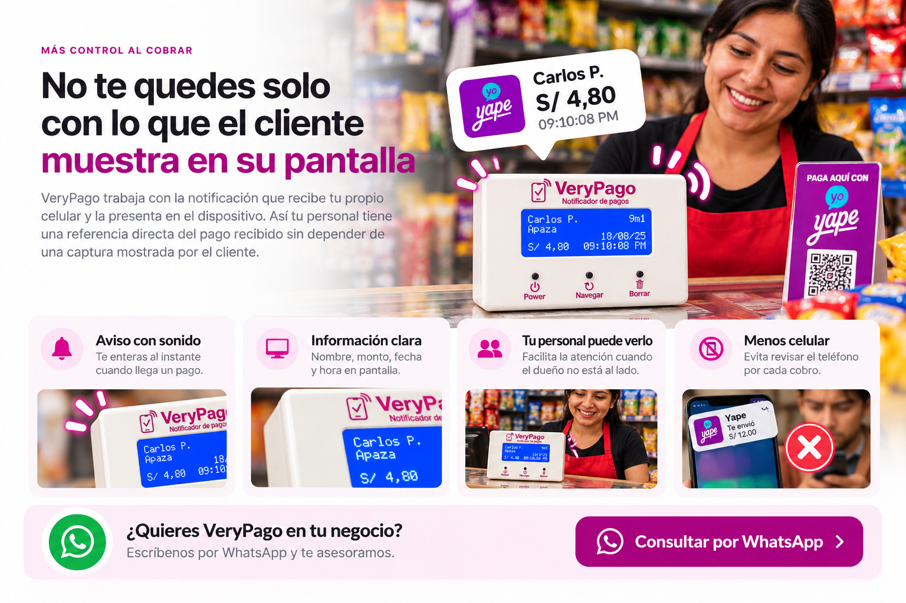
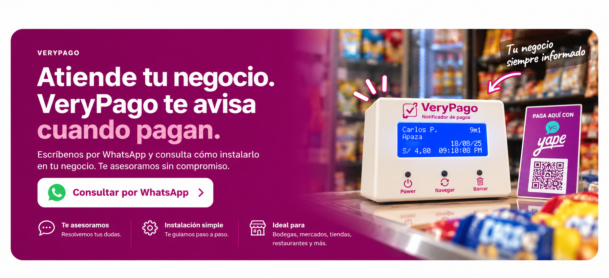

NOTIFICADOR DE PAGOS PARA TU NEGOCIO
Recibe tus pagos por Yape sin revisar tu celular
Cuando recibes un pago, VeryPago lo muestra automáticamente con el nombre, monto y hora y te avisa con sonido.
✓ Fácil de usar✓ Para ti y tu personal✓ Ideal para negocios


LA DIFERENCIA SE NOTA
Sin VeryPago vs. Con VeryPago




PREGUNTAS FRECUENTES
Antes de pedir tu VeryPago
¿Tengo que revisar mi celular para cada pago?
No. La idea de VeryPago es mostrar automáticamente en el equipo la información del pago que llega al celular.
¿Qué información aparece?
El equipo puede mostrar el nombre asociado a la notificación, el monto y la fecha/hora del pago.
¿Puede usarlo mi personal?
Sí. El visor puede quedar en el área de atención para que el personal vea los pagos recibidos.
¿Sirve para negocios con mucha atención?
Sí. Está pensado especialmente para bodegas, mercados, restaurantes, tiendas y otros negocios donde revisar el celular interrumpe el trabajo.
